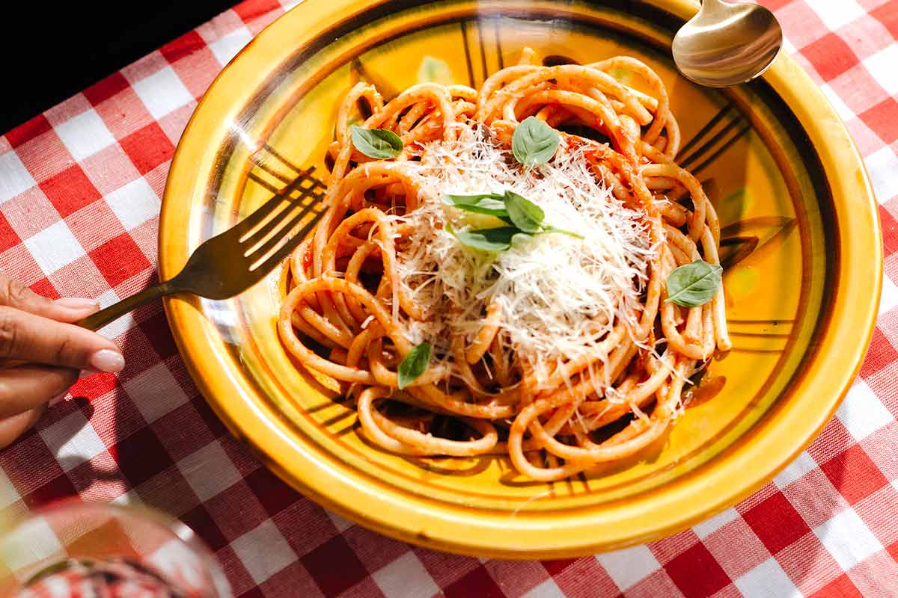
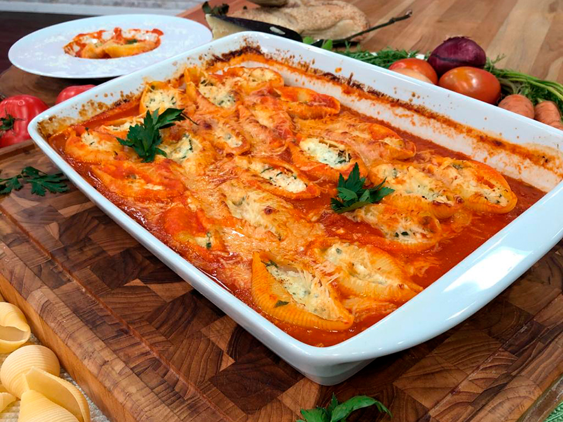
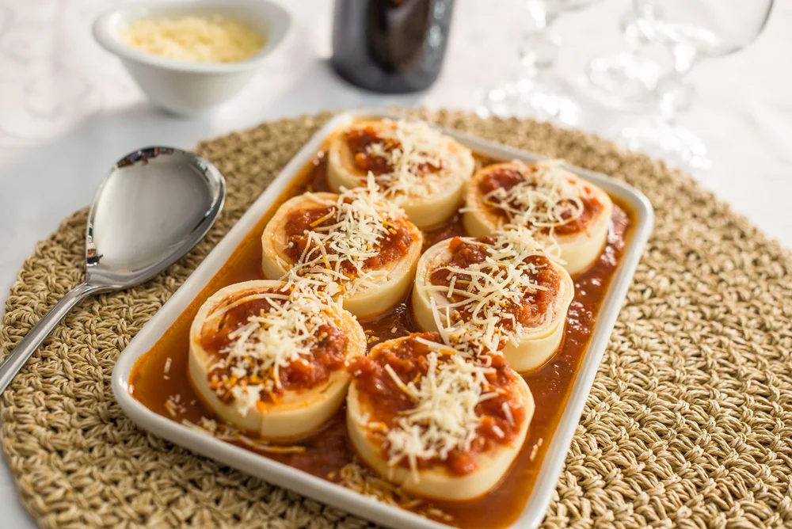

Fettuccine Cremoso della Casa
Preparado com massa fettuccine de textura delicada, este prato é envolvido em um molho branco cremoso
e aveludado, elaborado com creme selecionado e um toque especial de queijos que garantem
profundidade e equilíbrio ao sabor. Finalizado com ervas frescas que realçam o aroma e trazem leveza à
composição, o Fettuccine Cremoso della Casa é uma escolha perfeita para quem busca uma experiência
reconfortante, marcante e cheia de personalidade. - R$ 42,90


Ravioli al PomodoroDelicados raviolis de massa artesanal, cuidadosamente |
 Spaghetti al Pomodoro con BasilicoUm clássico atemporal da culinária italiana, preparado com |
|
 Conchiglioni Gratinati al FornoGrandes conchas de massa recheadas com um cremoso mix de |
 Rondelli della NonnaDelicadas lâminas de massa envolvem um recheio cremoso e bem |